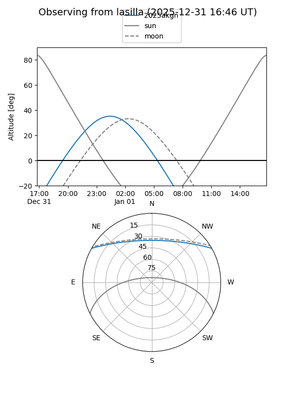
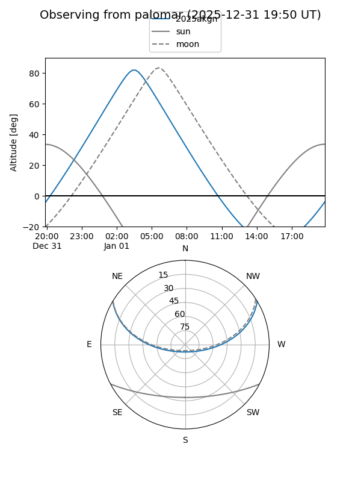

2025akgn
Target 2025akgn at 2025-12-31 17:00
Aliases and brokers:
FINK:
Lasair:
ALeRCE:
TNS:
YSE:
alt names
ZTF25acgddow (ztf,fink_ztf)
2025akgn (tns,yse)
PS25kwu (panstarrs)
Coordinates:
equatorial (ra, dec) = 35.7185,+25.36751
equatorial (HMS+DMS) = 02:22:52.44,+25:22:03.02
galactic (l, b) = (147.6947,-33.06999)
Flags:
Photometry:
last ztfg=20.40, ztfr=20.15
2 ztfg, 1 ztfr detections
Lightcurve

Visibility


Additional plots